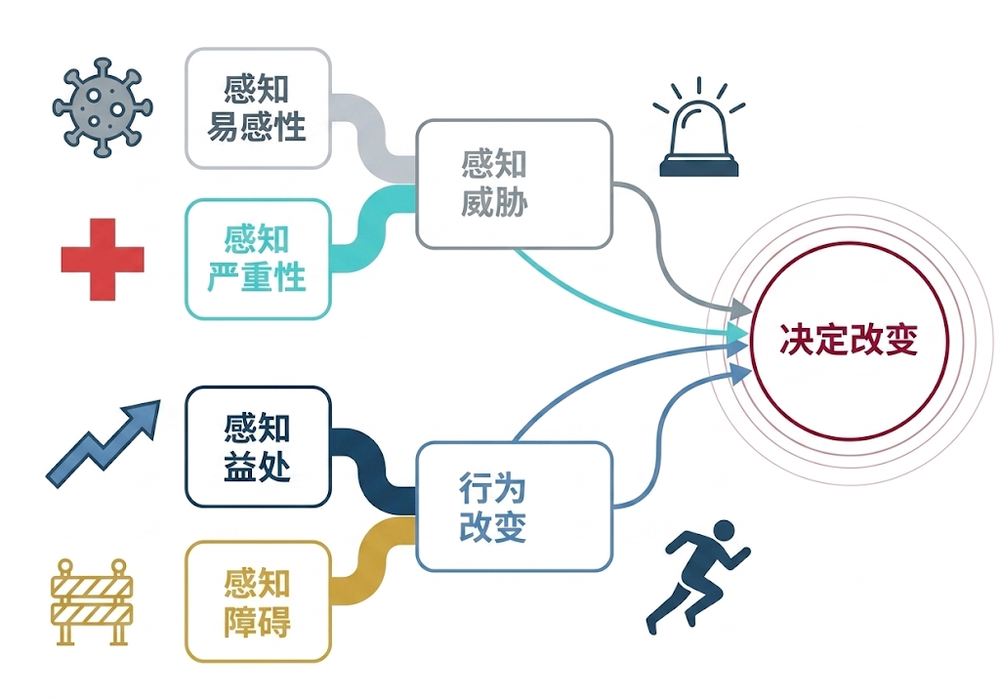
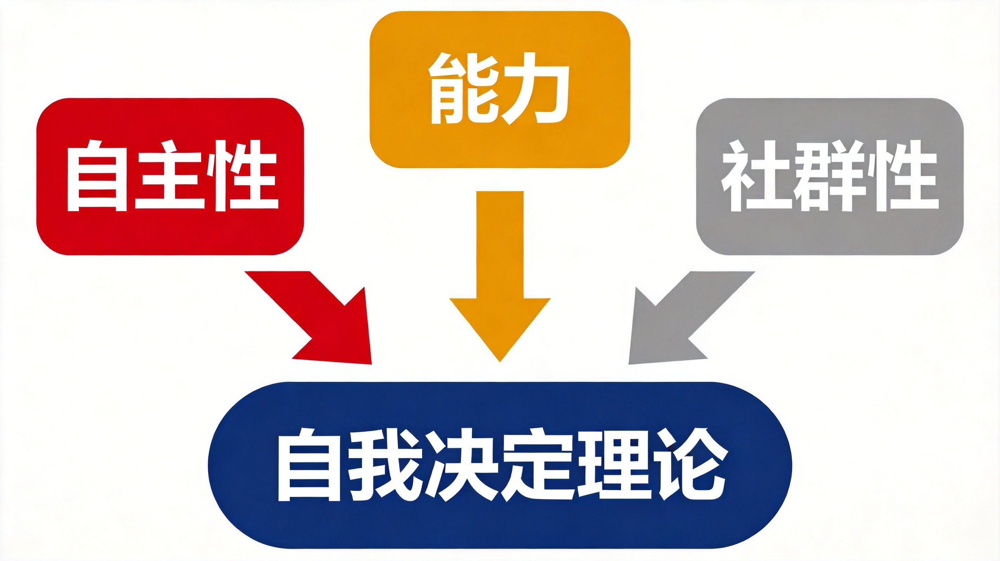
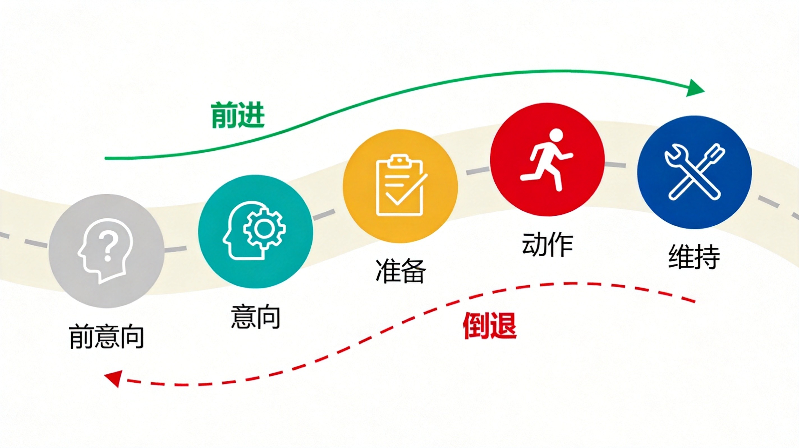
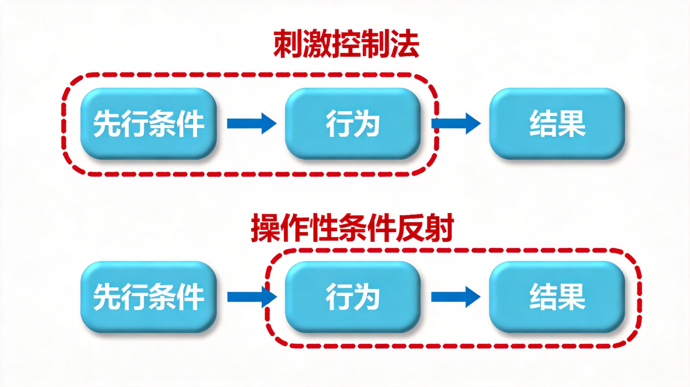
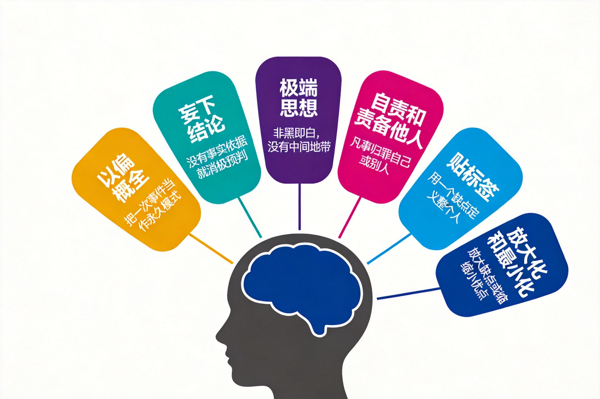
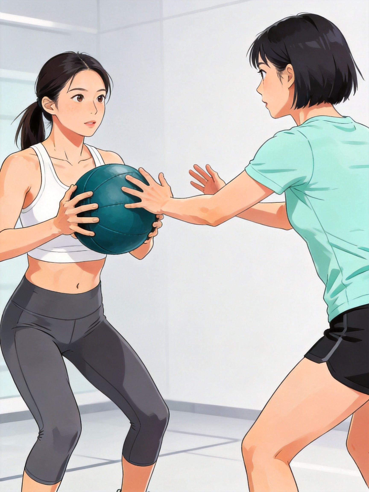
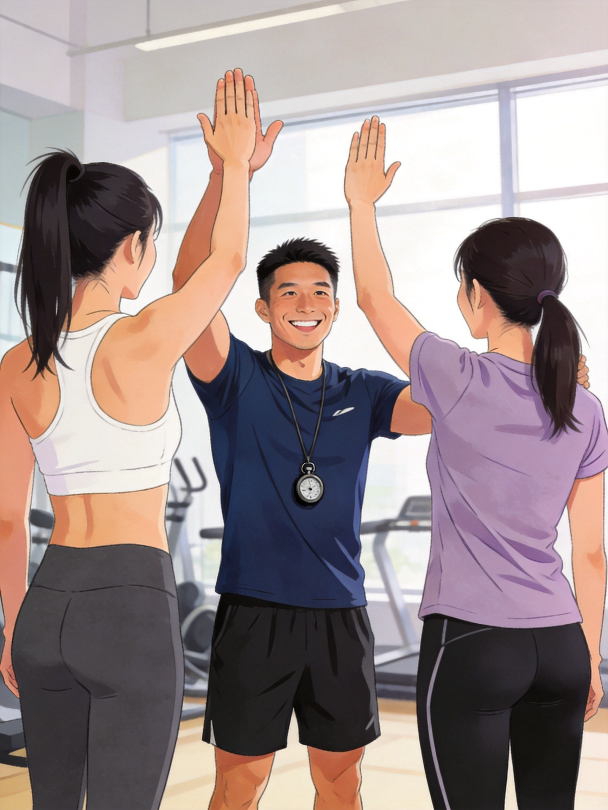
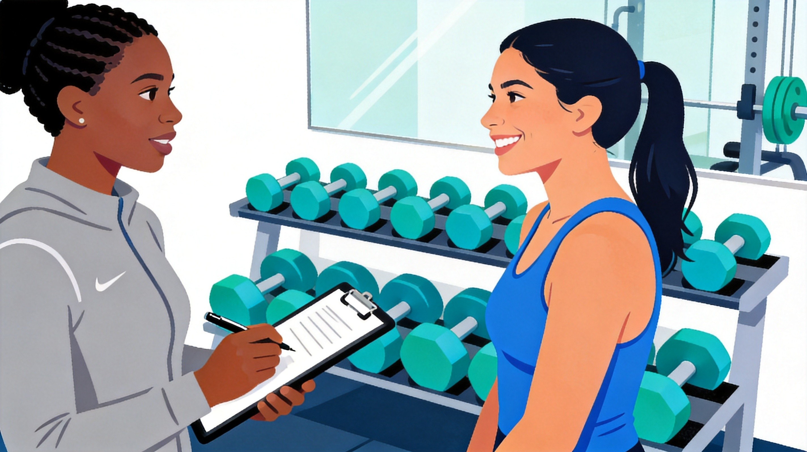
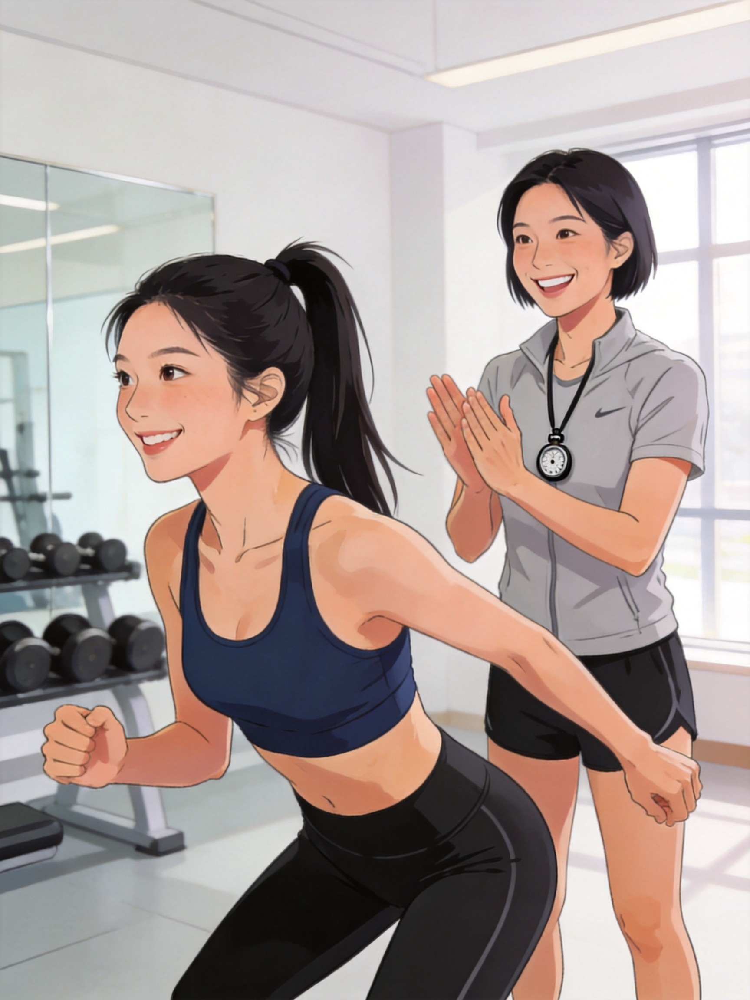
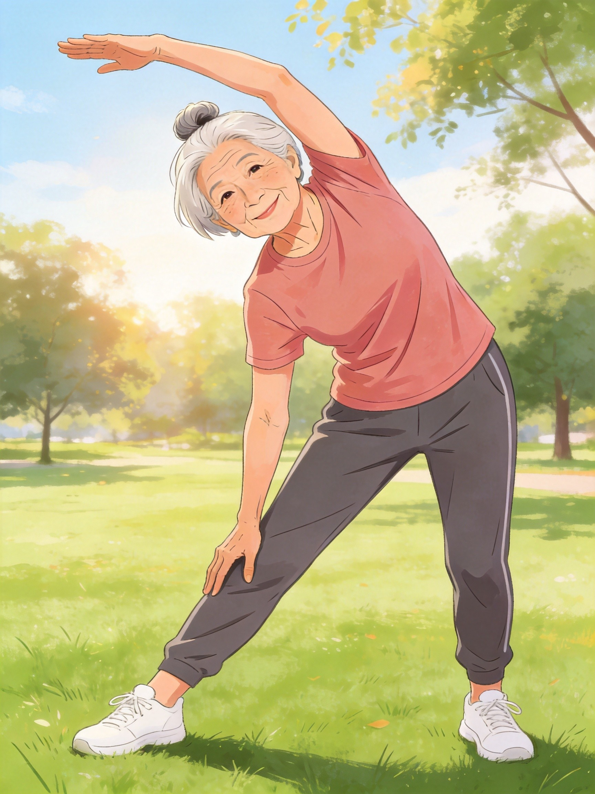

行为改变的基础
总述
本章核心讲的是：如何帮一个人告别久坐少动、不健康的旧生活方式，建立从开始运动到坚持运动的全新模式。一个人的改变，靠的是实实在在的具体行为。一名成功的私人教练，不光要会制定运动计划、教运动技巧，还要会指导客户完成健康行为的改变，并创造产生运动动机的条件。本章通过三大核心模块，把行为改变的方法、原理和坚持运动的关键系统梳理。
分述：三大核心模块内容
行为理论模型概览
这部分是帮客户改变行为的基础方法，主要包含三个核心模型：
健康信念模型

图2-1
自我决定理论

图2-2
行为改变的跨理论模型，也叫TTM

图2-3
行为改变原理概览
知道了方法模型，还要懂背后的道理，才能真正用起来，核心分为以下内容：
1. 操作性条件反射
人的行为出现，要么是被前因刺激产生的，也就是刺激控制法；要么是被事情的结果反馈影响，结果的好坏会决定人要不要继续做这个行为，这就是操作性条件反射的核心。

图2-4
2 认知与行为
教练不光要了解客户对运动的看法，更要引导客户看清自己的想法：首先要帮客户找出自我责备、妄下结论这类非理性想法；其次要教客户正确设定目标，目标设定是最常用、最直接的行为改变方法，关键是要科学设定，避免立完目标就放弃。

图2-5
3. 自我监测
自我监测是对目标相关的行为、情境和反应进行系统记录与观察。客户可以通过训练日志、步数、运动时间、主观用力程度或情绪反应等信息，了解自己的行为模式，并为后续目标调整提供依据。自我监测是自我调节的一部分，但不等同于单纯依靠自律。
身体活动与坚持概览
让人下定决心开始运动、刚开始尝试都很简单，最难的是长期坚持。书中把影响坚持运动计划的因素分为三大类，也可以理解为天时、地利、人和：
1. 个人特质
2. 环境因素
3. 身体活动因素
总结
本章整体逻辑清晰易懂，先给出了客户行为改变的方法论（三大理论模型），再讲解了行为改变背后的科学原理（操作性条件反射、认知行为、自我监测），最后说明了影响客户坚持运动的关键因素。整体围绕"让人产生行为改变、并长期坚持运动"展开，以上为全章框架概览。
第一部分：
1 行为理论模型
一 总述
本节讲解行为理论模型，首先要明确为什么会诞生这些行为理论模型，原ACE教材第61页给出了三个关键原因，也正是基于这些原因，私人教练不能只设计训练计划，更要帮客户养成终身运动的习惯，由此衍生出三大行为改变模型，以下先讲解健康信念模型和自我决定理论这两大核心模型，帮大家掌握指导客户行为改变的基本原理。
分述：行为理论模型核心内容
一、行为理论模型的存在原因（3个关键要点）
环境影响是健康行为改变的重大因素
外界的身体环境、社会环境等，都是推动行为改变的重要因素，比如整个社会崇尚运动、自身身体感受到运动需求，都会促使人做出行为改变。
行为改变是持续过程，而非单一过程
短暂的改变没有任何意义，一个人想要真正变好，需要长期、持续地发生行为改变，而非一时兴起。
人的行为意向和行为通常不统一
行为意向与实际行动之间常存在差距。客户可能真诚地想要运动，却因为环境障碍、能力感不足、动机质量或计划不适配而未能持续行动。
基于这些特点，私人教练的工作不应局限于设计单次训练。教练还需要帮助客户逐步建立稳定的身体活动习惯。下文首先介绍健康信念模型。
1.1 健康信念模型
模型核心定义
人们对疾病预防、治疗的看法和潜在情绪，会直接影响自身的健康行为，也会决定是否改变不健康的行为，简单说就是：一个人对自身健康状况的认知，决定了他要不要运动、要不要保持现状。
核心判断逻辑：两大核心变量
健康信念模型认为，行为改变与个人对健康威胁的感知，以及对行动益处和障碍的判断有关。当个人感知到足够的易感性和严重性，并认为行动益处足以克服障碍时，采取行动的可能性通常会提高。
● 变量一：健康威胁性
这是改变的前提，分为两个维度：
① 自觉罹患性：自己感觉患上疾病的可能性大小；
② 自觉严重性：自己感觉疾病的严重程度（短期或长期）。
当客户觉得自己有可能有健康问题、并感觉严重，感知到的健康受威胁越大。
对潜在问题的健康筛查可能让客户意识到此前未意识到的问题，从而促进改变
● 变量二：健康行为的益处与障碍
光有健康威胁还不够，还要看客户对运动等健康行为的认知：
① 自觉益处：认为采取运动、调整饮食等健康行为是有效的；
② 自觉障碍：认为执行健康行为会遇到的困难，比如觉得改变饮食很痛苦、没时间运动。
教练的核心作用
帮客户树立健康行为的信念与信心，放大健康行为的益处，降低客户对执行障碍的感知，推动客户主动做出改变。
💡 威胁大 + 益处多 + 障碍少 = 改变自然来
● 想象一个天平：左边是"健康威胁感"，右边是"运动利弊"。只有左边够重、右边够轻，天平才会倾斜，你才会行动。
威胁是油门，益处是方向盘，障碍是刹车——三样配合好，车才能开走。
过度夸大健康威胁（比如用极端案例吓唬客户），短期可能有效果，但容易引发焦虑抵抗，长期适得其反。
1.2 自我决定理论
模型核心定义
人们通常只愿意做自己感兴趣、自身认同的事，不喜欢被他人强迫，除非自己主动寻求指导，这一理论核心围绕动机展开，分为自主动机和受控动机。

图2-6
两种核心动机（内在+外在）
● 自主动机（内在动力）--“运动很有趣”：出于自身自由意愿，因为运动本身的体验、愉悦感去运动，单纯喜欢运动这件事，参与运动的目的更积极纯粹；
● 受控动机（外在动力）--“运动很有用”：行为主要由外部要求、奖励、惩罚或内在压力驱动，个人感到自己“不得不做”。减重、健康或社交等目标本身并不必然属于受控动机；关键在于客户对目标的内化程度和自主体验。
绝大多数人都是内在动机和外在动机混合存在，因此教练设计训练计划，既要让运动本身充满乐趣，也要让客户获得成就感，做到既有趣又有用，坚持的可能性才会更高。
提升内在动力的三大核心需求
内在动力在满足三个需求时会大幅提升，这里的能力指客户的自我感知能力，而非真实能力：
● 能力感知——“我能行：客户自我感觉能成功完成训练任务，正面反馈会增强这种感知，负面反馈则会削弱；
● 自主性---”我自己的选择“：客户感觉运动行为是自己决定的，遵循"我觉得"而非"你觉得"；
● 社群性（归属感）——”我们是一伙的“：在运动群体中找到归属感，不感到孤单。
教练对应做法：给予正面反馈提升能力感知；和客户共同设计目标提升自主性；促进客户间建立友情提升社群性。

图2-7
运动中的动机氛围营造
● 如果外部奖励让客户感到被控制，可能削弱自主动机；肯定进步、提供选择并帮助客户发现运动本身的意义和乐趣，更有利于动机内化。
● 教练要营造任务相关氛围，而非自我相关氛围：任务相关氛围能让客户更有信心、有连接感；自我相关氛围易让客户陷入竞争、对环境陌生尴尬，降低坚持度。
ACE教材68页实操方法：强调过程目标而非结果目标（比如一周去4次健身房，而非一个月减多少斤）；不把客户与他人比较；及时庆祝客户的成就，增进归属感
关键社交策略：社会支持
社会支持是提升运动坚持度的重要因素，核心是让客户"不是一个人在战斗"，具体做法包括：
● 邀请客户的朋友、家人一同加入运动计划；
● 让亲友提醒训练目标、预约训练；
● 和朋友开展趣味良性竞赛；
● 训练计划中加入社交元素，定期开展社交互动；
● 开展小团体私教、成立运动俱乐部或团体活动。
💡 内在动机三件套——：我能、我选、我归属
● 想象你在玩一个游戏：
● 我能（能力感知）：每一关都设计得刚好有点挑战但能过
● 我选（自主性）：游戏规则是你和设计师一起定的
● 我归属（社群性）：你和一帮志同道合的玩家在一起
● 当能力感、自主性和归属感得到支持时，客户更可能形成质量较高的自主动机。
自主动机体现为“我选择做”，受控动机体现为“我不得不做”。教练应通过支持自主性、能力感和归属感，促进动机内化。
客户刚开始很有热情，两周后明显消退
"你要坚持啊！加油！"
1. 先排查：消退是因为能力感知受挫（太难了）？自主性被剥夺（感觉被教练逼着练）？还是缺乏社群支持（一个人练很无聊）？
2. 针对能力感知：降低难度，增加成功体验，哪怕只是做一个深蹲也要肯定
3. 针对自主性：问"你想练什么？""你觉得这个强度OK吗？"把决定权还给客户
4. 针对社群性：介绍他认识同期训练的学员，约着一起练
过度依赖外在奖励（"坚持一个月奖励你一节课"），短期有效但会削弱内在动机。奖励要聚焦在体验感上，而非物质上。
总结
至此，两个模型的核心内容已经明确。HBM关注客户对健康威胁、行动益处与障碍的感知；SDT关注动机质量以及能力感、自主性和归属感的支持。
健康信念模型主要解释客户如何判断健康威胁、行动益处与障碍；自我决定理论则强调动机质量以及自主性、能力感和归属感。健康风险认知可以促进行动意愿，但单纯依靠恐惧或压力通常不利于长期坚持。教练应将风险教育与自主支持结合起来。
✍小节回顾与练习第一部分：行为理论模型（HBM + SDT）
基本原理
● HBM的关键变量包括感知易感性、感知严重性、感知益处和感知障碍。这些感知共同影响客户采取行动的可能性。
● SDT 的核心是区分"我要做"（自主动机）和"要我做"（受控动机）：满足能力感知、自主性、社群性三大需求，才能将外在动机内化。
● 两个模型的衔接：HBM 解决"为什么变"，SDT 解决"怎么变才能持续"——，即威胁促发改变，自主维持习惯。
互动考题
Q：一名客户知道自己血压偏高，也清楚运动能改善，但总觉得"太忙了没时间运动"。根据健康信念模型，该客户最需要干预的变量是：
● HBM 两大变量：健康威胁性（自觉罹患性 + 自觉严重性）+ 健康行为益处与障碍（自觉益处 + 自觉障碍）
● SDT 三需求：能力感知 + 自主性 + 社群性（归属感）
● 任务相关氛围 vs 自我相关氛围：前者提升信心与连接感，后者引发竞争与尴尬
● 社会支持的五种做法：家人加入 / 亲友提醒 / 良性竞赛 / 社交元素 / 团体活动
1.3 行为改变的跨理论模型
总述
行为改变的跨理论模型简称TTM，也叫改变阶段模型，无论是教练实际工作中还是考试，都是重中之重的核心考点。
这个模型一共由四个核心部分组成：改变阶段（含5个细分阶段）、改变过程、自我效能、决策平衡。
简单理解四者的定位：
改变阶段是客户当下的现状；
改变过程是客户从当前阶段进阶到下一阶段的方法；
自我效能是客户对自己能做出健康改变的信念；
决策平衡是客户衡量运动这件事的利弊，只有利大于弊，才会真正做出改变。
分述：TTM四大核心部分详解
一、改变阶段（TTM第一部分，5个核心阶段）
改变阶段是判断客户当下运动状态的依据，可通过「想法+行动」两个维度区分，也是最容易记忆的方式：
思考前阶段：没想法、没行动，完全没准备好进行运动
思考阶段：有想法、没行动，考虑6个月内会多运动，但始终未开始
准备阶段：有想法、不定期行动，会偶尔运动但没有常性，未形成规律
行动阶段：有想法、有行动，规律运动时长小于6个月
维持阶段：有想法、有行动，规律运动时长大于等于6个月
表2-5
| 阶段名称 | 想法状态 | 行动状态 |
|---|---|---|
| 思考前阶段 | 无 | 无行动，完全未准备好进行运动 |
| 思考阶段 | 有 | 无行动，计划 6 个月内运动，但尚未开始 |
| 准备阶段 | 有 | 不定期行动，偶尔运动但无常性，未形成规律 |
| 行动阶段 | 有 | 有规律行动，规律运动时长＜6 个月 |
| 维持阶段 | 有 | 有规律行动，规律运动时长≥6 个月 |
唯一没想法的只有思考前阶段；从思考阶段开始，客户对运动的益处都有意识，核心区别在行动的规律度和持续时长；只有维持阶段，运动才成为固定长期的习惯。
二、改变过程：进阶到下一个阶段（TTM第二部分，阶段进阶的核心）
改变不是线性过程，很多人会在两个阶段间停摆好几年，教练不能急于求成；
改变并非简单的线性过程。客户可能向前进展、停留，也可能退回早期阶段。教练应通过开放式提问和倾听识别客户当前阶段，再选择与其准备程度相匹配的干预策略。
举例：不同阶段的进阶目标与干预方式：
● 思考前阶段→思考阶段：核心目标是让客户认知运动的好处，建立运动想法
● 准备阶段→行动阶段：核心目标是帮客户掌握持续运动的基本技能，扫除运动障碍
● 行动阶段→维持阶段：核心目标是增加社会支持、提高自我效能，防止客户退训
改变过程分为认知过程和行为过程：
表2-6
| 阶段 | 核心特质 | 核心目标 | 场景化干预策略（私教 / 运动场景） |
|---|---|---|---|
| 思考前阶段 | 没意识到问题 / 低估问题，认为 "我不需要运动" | 唤醒改变意识，让学员开始考虑改变 | 1. 用低压力沟通传递事实："很多和你同年龄、同久坐习惯的客户，3 个月规律运动后腰颈不适都有改善，你要不要了解下？"<br/>2. 不推销课程，只提供 1-2 条低成本信息（比如办公室拉伸图、10 分钟居家动作），降低抵触<br/>3. 探索学员的个人价值（比如想陪孩子打球、想改善睡眠），关联运动的好处 |
| 思考阶段 | 知道自己需要运动，但纠结利弊、怕麻烦，计划 "6 个月内再说" | 降低改变顾虑，强化改变动机 | 1. 帮学员梳理 "运动 vs 不运动" 的具体利弊，比如 "每周 3 次 30 分钟快走，和不运动比，1 年后心肺功能差多少？"<br/>2. 提供超简单的行动选项，比如 "先从每周 1 次、15 分钟散步开始，试试水？"<br/>3. 用真实案例强化积极预期："之前有个客户和你一样，从每周 1 次开始，3 个月就爱上了运动" |
| 准备阶段 | 有想法、偶尔运动，想尝试规律训练 | 建立信心，制定可执行的第一步计划 | 1. 帮学员拆解目标：不喊 "每周练 3 次"，而是定 "每周 2 次，每次 20 分钟，从自重深蹲 + 拉伸开始"<br/>2. 识别障碍并解决：比如 "你下班晚，那我们把训练时间定在周末上午 + 周三晚上，19 点开始？"<br/>3. 帮学员建立支持系统：比如拉他进同节奏的训练群，或和朋友约好一起打卡 |
| 行动阶段 | 规律运动＜6 个月，习惯未稳定，易反弹 | 固化新习惯，应对倒退风险 | 1. 用行为矫正策略：比如把训练日设成固定时间，训练前 1 小时发提醒，训练后立刻给正向反馈<br/>2. 帮学员建立 "倒退预案"：比如 "这周加班没时间练，允许你只做 10 分钟拉伸，不算失败"<br/>3. 建立自我监督：比如打卡表、训练日志，每周复盘 1 次，及时调整计划 |
| 维持阶段 | 规律运动≥6 个月，有动力但怕厌倦 | 巩固长期习惯，避免倦怠与反复 | 1. 调整训练计划，加入趣味元素：比如把跑步换成骑行、徒步，或尝试新的动作组合<br/>2. 强化内在动机：引导学员关注 "运动后精力变好、睡眠改善" 等内在感受，而非只盯体重数字<br/>3. 帮学员建立 "终身运动" 的思维，比如教他如何根据工作、生活变化调整训练节奏 |
技巧策略：每个阶段的下一阶段，是当前阶段的"改变"目标：即了解下一阶段的特点，就可以基本清楚本阶段改变过程的手段。
改变过程又分为认知过程和行为过程，是推动阶段进阶的两大抓手：
认知过程（思想层面改变）
核心是扭转客户的认知，从思想上认可运动：包括改变自我认知、重燃运动动力、意识到自身行为能影响家人、树立健康运动的自我形象等。（注：「和志同道合的运动人群建立联系」对应「辅助性关系」，属于行为过程，已移至行为过程部分）
行为过程（行动层面改变）
核心是用实际行动替换旧的不健康习惯：比如用户外散步、健康午餐替代周末喝酒放松；搭建社会支持体系，让家人监督监督；设置个性化奖励，达成目标后奖励自己等，具体方法如下：
表2-7
| 改变过程 | 理论定义 (Cognitive/Behavioral Processes) | 机制解读 (Mechanistic Interpretation) | 实践案例 (Practical Application) |
|---|---|---|---|
| 意识提高 | 增加关于不健康行为原因、后果及补救措施的各类信息摄入。 | 认知重组： 通过获取高质量证据（如流行病学数据），打破"知识盲区"，削弱对旧习惯的认知偏见。 | 向客户讲解关于"久坐行为与全因死亡率相关性"的Meta分析文献。 |
| 情感唤起 | 对不健康行为带来的负面后果产生深刻的情感体验，并由决定改变带来的宽慰感驱动。 | 情感驱动： 利用情绪（如恐惧或希望）作为行动催化剂，将抽象的健康风险具象化为个体的情绪波动。 | 客户在体检报告中看到高血糖指标后产生的焦虑，通过建立训练计划将其转化为"行动即缓解"的动力。 |
| 自我重新评价 | 对自我形象进行认知和情感上的评估，衡量旧习惯与个人核心价值观之间的冲突。 | 身份认同重塑： 评估"不健康的自我"与"理想化的自我"之间的差距，触发身份转变的内在动机。 | 客户意识到"目前的肥胖状态与我作为职业管理者的精明、自律形象不符"，从而确立改变意志。 |
| 环境重新评价 | 评估个人行为对社会环境（尤其是人际关系）产生的正面或负面影响。 | 社会责任感知： 将行为后果从个体扩展到系统，利用社会联结感增强改变的道德义务感。 | 父亲意识到自己的吸烟或缺乏运动习惯正在给孩子传递负面的生活方式范式。 |
| 自我解放 | 相信自己具备改变的能力，并做出坚定的改变承诺（意志力）。 | 自我效能与自主选择： 确认个体具备改变的代理权（Agency），通过公开承诺增加背弃成本。 | 训练营学员在开营仪式上签署《健康行为契约》，并在社交平台公布为期12周的训练目标。 |
| 辅助性关系 | 利用社会支持系统获取信任、关心和接纳，辅助行为坚持。 | 外部杠杆效应： 构建防御性的社会网络，通过情感支持和技术指导降低维持新行为的认知负荷。 | 建立"1对1导师制"或"运动小组"，利用教练的专业支持和同伴的归属感减少训练流失率。 |
| 反向调节 | 学习用健康的行为、思考方式来替代原有的不健康习惯。 | 习惯替代： 基于经典条件反射理论，通过建立新的神经通路来竞争并覆盖旧有的条件反射。 | 用周末和家人一起做饭露营替代外出饮酒聚餐。 |
| 强化管理 | 针对健康行为的进步给予正向奖励，或减少对不健康行为的强化。 | 结果预期调节： 利用操作性条件反射原理，通过即时反馈机制（内源性或外源性）固化目标行为。 | 达成月度减脂目标后奖励自己一套专业训练装备，或记录训练后的多巴胺分泌带来的心理愉悦感。 |
| 刺激控制 | 移除诱发旧习惯的提示物，并增加能触发新行为的视觉或环境提示。 | 环境预设（Nudging）： 改变微观环境中的选择架构，降低做出正确决策所需的认知能量损耗。 | 睡觉前将运动服放在床头；卸载手机内的外卖APP，将健身应用放在首屏醒目位置。 |
| 社会解放 | 意识到社会规范和环境机会正在向支持健康行为的方向转变。 | 社会常模同化： 利用宏观环境的变革（政策、文化）来降低个体改变的社会阻力。 | 意识到公司健身房的建立或城市慢行步道的完善，利用这些公共设施让运动变得触手可及。 |
自我效能（TTM第三部分，改变的核心信念）

图2-8
定义：自我效能就是一个人对自己能成功完成某项健康任务的信念，它和行为改变是双向影响的关系。自我效能决定是否参与运动，参与运动的经历又会反过来影响自我效能，二者互为因果。
自我效能的6个来源（影响信念的关键因素，来源：ACE 6th Ed, p.78, Warner等, 2014; Bandura, 1997）：
① 过往经验（既往运动经历，对自我效能影响最大）
② 替代性经验（看到和自己相似的人成功运动，提升信心）
③ 口头说服（业界大咖、专业人士的鼓励与引导）
④ 生理评价（自身身体疲劳度、身体状态）
⑤ 情感/情绪评价（运动时的情绪是积极还是焦虑沮丧）
⑥ 想象经验（预想坚持运动后全新的自己，激发信念）
教练的核心作用：优秀的教练不应注重在教学中展示自己的优秀，而应该聚焦挖掘客户潜能、提升客户的能力与信心，强化客户的自我主体意识和自我觉察。自我效能低的客户，容易选轻松任务、轻易放弃，因此提升自我效能是教练的核心工作之一。
四、决策平衡（TTM第四部分，改变的利弊权衡）
定义：客户决定是否运动，核心是权衡这件事的利与弊，利大于弊才会主动改变，且决策平衡是动态变化的过程。
不同阶段的利弊认知：
● 思考前、思考阶段客户：通常认为运动的弊大于利，所以迟迟不开始
● 行动、维持阶段客户：普遍认为运动的利大于弊，所以能坚持
教练的实操方法：
① 用开放式提问、积极倾听，了解客户心中的运动自觉收益（好处）和自觉损失（坏处），不急于给答案、不嘲讽客户
② 帮客户放大运动收益，同时最大程度降低自觉损失
③ 结合短期+长期益处引导客户，既着眼当下改变，也放眼未来效果，避免只强调长期益处打击客户积极性（该技巧会在第四章动机性访谈中重点运用）
表2-8
| 与接受期望行为相关的自觉收益 | 与接受期望行为相关的自觉损失 |
|---|---|
| 1. _____ | 1. _____ |
| 2. _____ | 2. _____ |
| 3. _____ | 3. _____ |
| 4. _____ | 4. _____ |
| 最大程度增加获得收益的可能性的策略 | 最大程度降低遭受自觉损失的可能性的策略 |
| 1. _____ | 1. _____ |
| 2. _____ | 2. _____ |
| 3. _____ | 3. _____ |
| 4. _____ | 4. _____ |
| 与接受期望行为相关的自觉收益 | 与接受期望行为相关的自觉损失 |
| 1. 肩颈 / 腰背酸痛明显缓解，久坐后僵硬感减轻 | 1. 每周需要安排 3 个固定时段，挤占部分休闲 / 刷手机时间 |
| 2. 体脂率下降，腰围减少 2-3cm，裤子更合身 | 2. 初期训练后肌肉酸痛，影响次日上下楼 / 搬东西等日常活动 |
| 3. 入睡时间缩短，夜间翻身减少，早上起床不疲惫 | 3. 需要购买基础运动装备 / 私教课程，产生一定花费 |
| 4. 下午犯困情况减少，工作 / 学习精力更集中 | 4. 可能因加班 / 出差 / 聚会中断计划，产生 "半途而废" 的挫败感 |
| 最大程度增加获得收益的可能性的策略 | 最大程度降低遭受自觉损失的可能性的策略 |
| 1. 每次训练固定安排 10 分钟肩颈 / 腰背针对性放松训练 | 1. 优先选择早起 30 分钟或午休时段训练，不占用晚上休息时间 |
| 2. 搭配每日 1500-1800ml 饮水 + 减少高糖零食，放大减脂效果 | 2. 训练后安排 5 分钟泡沫轴放松 + 静态拉伸，缓解延迟性肌肉酸痛 |
| 3. 每周日复盘睡眠质量，用手机睡眠 APP 记录，可视化改善效果 | 3. 先从平价自重训练 / 团课入手，或利用居家无器械训练降低成本 |
| 4. 训练日当天安排 1 次 10 分钟短休息 + 轻度活动，提升下午精力 | 4. 制定 "容错计划"：每周允许 1 次临时调整，中断后次日恢复即可，不算失败 |
总结
TTM行为改变跨理论模型的四大要点环环相扣，是教练指导客户运动行为改变的核心逻辑：先通过5个改变阶段定位客户现状，再用认知+行为的改变过程帮客户稳步进阶，通过六大来源提升客户的自我效能信念，最后优化决策平衡让客户认可运动利大于弊，最终帮客户从无运动想法，一步步实现长期维持运动的目标
TTM 四个部分是一条完整的诊断—干预链：改变阶段告诉你"客户在哪里"，改变过程告诉你"怎么推他走"，自我效能告诉你"他信不信自己能走"，决策平衡告诉你"他觉得值不值走"。四个部分缺一不可。只看阶段不看效能，可能推不动；只看效能不看决策平衡，客户觉得"我能但我不值"。教练的任务是四个维度同时评估、同步干预。
✍️小节回顾与练习第二部分：跨理论模型（TTM）
基本原理
● 改变阶段是诊断工具：用"想法 + 行动"两个维度定位客户当前位置，是所有干预的起点。
● 阶段匹配：教练应先识别客户当前的改变阶段，再选择与其准备程度相匹配的干预策略，并对停留或倒退保持预期。
● 自我效能是动力开关：过往经验是自我效能最强的来源，提升自我效能是教练的核心工作之一。
● 决策平衡是变化的：思考前/思考阶段客户认为弊大于利，行动/维持阶段客户认为利大于弊。
互动考题
Q：一名客户已经每周运动 3 次、持续了 4 个月，但最近因出差中断了两周，担心自己"前功尽弃"。根据 TTM，该客户当前最可能处于哪个阶段？
● TTM 五阶段：思考前（无想法无行动）→ 思考（有想法无行动，6 个月内）→ 准备（有想法不定期行动）→ 行动（规律 < 6 月）→ 维持（规律 ≥ 6 月）
● 改变过程两大抓手：认知过程（思想层面改变）+ 行为过程（行动层面改变）
● 自我效能 6 来源：过往经验（影响最大）/ 替代性经验 / 口头说服 / 生理评价 / 情感评价 / 想象经验
● 决策平衡动态变化：思考前/思考阶段 弊 > 利；行动/维持阶段 利 > 弊
● 改变通常是循环而非直线的；干预策略应与客户当前阶段相匹配
2 行为改变的原理
总述
本部分核心讲解行为改变的底层原理，
很多专业教练能长期坚持运动，很难理解从不运动到开始运动的客户面临的巨大困难与挑战，这也体现出前一章行为改变理论模型的重要性。运用这些理论模型的核心价值，是把运动当作一项复杂的健康行为养成过程，而非简单的动作训练，需要教练依托科学原理，持续为客户提供行为指导，逐步扶持客户完成行为改变。这部分原理主要分为操作性条件反射（含先行条件）、认知与行为（非理性想法、目标设定、自我监测）两大核心内容。
分述
2.1 操作性条件反射
核心逻辑
后果影响行为，一件事做完之后的结果，会直接决定一个人是否会再次做出这个行为，这是操作性条件反射的核心。

图2-9
四种核心类型
表2-9
| 类型 | 细分 | 核心原理 | 典型举例 |
|---|---|---|---|
| 强化类（行为再次发生概率提升） | 正强化 | 行为后增加喜爱的正向刺激，促使行为重复 | 客户坚持训练，教练及时给予肯定、鼓励 |
| 负强化 | 行为后消除厌恶的负面刺激，促使行为重复 | 坚持运动后，身体不适、体检异常指标得到改善 | |
| 弱化类（行为再次发生概率降低） | 消退 | 行为后不再提供期望的正向刺激，行为再次发生概率下降 | 客户坚持到店训练，教练完全忽视该行为，从不表扬 |
| 惩罚 | 行为后施加厌恶的负面刺激，行为再次发生概率大幅降低 | 客户正常到场训练，却因动作质量不佳或饮食管理未达到要求被批评、指责 |
强化类（行为再次发生的概率提升）
● 正强化：行为发生后，增加客户喜欢的正向刺激，让客户感到愉悦，行为会重复发生。
● 负强化："负"是减号的意思，并非负面，指行为发生后，消除了客户不喜欢的厌恶刺激，结果让客户满意，行为也会重复发生。比如坚持运动后，体检异常指标改善、身体脂肪减少，就是典型的负强化。
弱化类（行为再次发生的概率降低）：
● 消退：行为发生后，没有出现客户想要的正向刺激，行为发生概率降低。比如新客户坚持来健身房，教练却从未表扬，忽略"到场运动"这个核心行为，属于消退，会降低客户再来的意愿。
● 惩罚：行为发生后，出现了客户不想要的厌恶刺激，行为发生概率大幅降低。比如客户坚持到场却被当众批评，就是惩罚+消退的双重负面效果。
🤔思考题
客户迟到、穿拖鞋和宽松衣物来健身房，
作为教练的你将如何应对
提示：应对方式方式会决定客户下次是否依旧如此；想要减少这类不当行为，可通过消退（去掉阳性刺激）或合理的"惩罚"（增加厌恶刺激）实现。
💡 强化让行为变多，弱化让行为变少
● 强化 = 让行为重复
● 正强化 = 加好东西（口头表扬、鼓励）
● 负强化 = 减坏东西（解除痛苦、消除不适）
● 弱化 = 让行为减少
● 消退 = 不给好东西
● 惩罚 = 加坏东西
正向刺激是"胡萝卜"，厌恶刺激是"大棒"——。
客户完成了一次训练，你想强化他的行为
"这次表现不错"（太笼统）
——：真正实践中有效的增加正向刺激和去掉厌恶刺激的手段
即时反馈：训练结束当场肯定，而不是下次见面才说（正向刺激，正强化）
具体化："你今天的深蹲控制比上周稳多了，核心收紧的感觉找到了"（增加正向刺激，正强化）
关联价值：把表现和客户的个人目标联系起来——。"你坚持训练，上周说的腰背不适是不是缓解了？"（去掉厌恶刺激，负强化）
视觉化：记录进步（训练日志、体测数据、照片对比），让客户看到自己的改变（增加正向刺激，正强化）
把"自认为的严格"和"为他好"用做了消退和惩罚。客户按时来上课，也努力在学习，你却对这些行为毫无反应（消退）只盯着他某个动作没做好，不断的批评（惩罚），这就是消退+惩罚的“王炸”——，会打击客户的到场意愿。
先行条件（前因）与刺激控制
先行条件是行为出现之前的刺激因素，也就是"前因"，前因诱发行为的方式被称为刺激控制，是行为矫正的重要工具。比如锻炼前设闹钟、写训练笔记、手机设屏保、车内放置运动服，这些前因都能有效触发客户的运动行为。
操作性条件反射的核心启示是：教练要少用惩罚、多用强化。惩罚看似有效，但会产生两个问题：一是让客户把训练与负面体验绑定（消退 + 惩罚叠加），二是客户可能"表面服从、实际逃避"。好的教练永远优先用正强化（即时、具体、关联价值），只在涉及安全的底线问题上才用惩罚逻辑。这也是第一章"消除风险 > 告知风险"原则在行为层面的延伸。
2.2 认知与行为
一个人的行为（个体行为）会受自身看法直接影响，因此认知层面的引导是行为改变的关键，主要包含以下内容：
取代非理性想法
大多数人都存在不同程度的认知扭曲，比如极端思想（要么不做、要么做最好）、以偏概全（吃一块巧克力就彻底放纵）、责备他人（加班没管好饮食都怪老板）、固有偏见（女生天生力气小不用练力量）、忽视健康（高血压多年觉得无所谓）等，这些认知扭曲会阻碍客户建立健康的思维方式。
教练不要直接指责客户认知扭曲（这不礼貌也不专业），而是通过开放式提问，和客户共同思考，引导客户自行意识到自身的非理性状态，逐步建立健康认知。
表2-10
| 类别 | 名称 | 核心定义（一句话版） | 典型例子 |
|---|---|---|---|
| 极端化思维 | 极端思想（非黑即白） | 把事情看成 "要么完美、要么彻底失败"，没有中间地带 | "我吃了一块饼干，节食就毁了，干脆把整包都吃了" |
| 变形镜 | 放大化（灾难化）/ 最小化 | 要么把小事灾难化放大，要么把严重问题刻意淡化 | "不喝几杯酒，压力根本缓解不了" / "高血压没什么大不了，我没感觉" |
| 片面化思维 | 以偏概全 | 用单次 / 局部事件，概括出 "永远、总是" 的绝对结论 | "从来没有好事发生在我身上" |
| "透视眼"和"千里眼" | 妄下结论 | 无依据地猜别人想法（读心），或武断预判坏结果（占卜） | "我家人觉得我跑不完 5 公里" / "就算瘦了几斤，也一定会反弹" |
| 标签化 / | 贴标签 | 用一件事，给自己 / 他人贴永久性负面标签 | "我总忘带运动鞋，真是个白痴" |
| 归因偏差 | 自责 / 责备他人 | 要么把所有错揽在自己身上，要么把问题全推给别人 | "都是我的错" / "老板催我工作，我压力大才抽烟，都是她的错" |
极：极端思想（非黑即白）
放：放大 / 灾难化 + 最小化
偏：以偏概全
断：妄下断论（读心 + 占卜）
标：贴标签
责：自责/ 责备他人
💡 认知扭曲六兄弟——：极、放、偏、断、标、责
● 想象这六个认知扭曲是一个犯罪团伙：
● 极端思想：要么最好，要么最差，没有中间地带
● 放大/灾难化：把小事变大，或把大事缩小
● 偏以概全：用一次失败否定全部
● 断妄下结论：读心术（猜别人怎么想）和占卜术（预言坏事）
● 标贴标签：给自己贴负面永久标签
● 责责备他人：都是别人的错
遇到"全或无"、"永远/从不"的句式，就要警惕可能是认知扭曲在作祟。
客户说："我昨晚没忍住吃了一顿火锅，我这周的努力全白费了，我果然不适合健身。"这属于哪种认知扭曲？
拓展一下，遇到以上问题，作为教练的你将如何应对呢？
直接反驳："一顿火锅不会长胖的"
不要否定情绪：先共情："能感觉到你对自己要求很高"
用提问引导：问"一顿火锅真的等于全毁吗？你能帮我算算热量吗？"
重建认知：引导客户意识到这是"极端思想"："吃了一顿不代表整个计划失败，明天正常吃回来就好"
设定弹性规则：提前告诉客户"允许自己每周有1次'欺骗餐'，这不算失控，而是人性"
教练急于纠正客户的认知扭曲，结果变成说教，客户防御心理更强。记住：引导比纠正更有效。
目标设定
目标设定是目前应用最广泛、最直接的行为改变策略，但多数人设定目标后很快放弃，核心是方法错误。教练在目标设定中需遵循三个要点：
● 目标必须由教练和客户共同制定，教练可提供制定目标所需的信息，但不能替代客户做决定
● 目标遵循SMART原则（第四章详细讲解）；
● 教练全程辅导客户完成目标设定，帮助其掌握制定有效目标的方法。
💡 目标设定三步走——：共同定、SMART、持续陪
● 共同定：目标不是你给客户拍脑袋定的，是你们一起商量的
● SMART：具体、可测量、可达成、相关、有时限
● 持续陪：设定只是开始，辅导完成才是教练的价值
目标不是定完就结束，定目标只是开始，陪客户完成才是本事。
客户说"我要减肥，三个月瘦20斤"
直接接受这个目标，开始制定计划
63. 先问"为什么"：减肥是为了什么？找到更深层的动机（穿得下婚礼礼服/体检指标正常/陪孩子跑步不喘）
64. 拆解成过程目标：定"每周3次训练，每次50分钟"。过程目标比结果目标更能坚持
66. 设置检查点：每周复盘一次，根据进展调整
67. 庆祝小胜：达成阶段性目标就庆祝，不等最后
🥵 常见误区：目标太大、太远，客户看不到进步就放弃了。把大目标拆成小里程碑，让客户持续有成就感。
自我监测
自我监测属于自我调节的认知过程，反映一个人对自身想法、感受的评价，以及如何用这些信息影响目标和行为，通俗来说就是自律的核心部分，包含自我控制、抵制冲动行为，做出符合自身愿景与价值观的选择。
行为改变靠的是科学方法。教练不要通过说教解决客户问题，而是用开放式问题辅助客户自我监测，让客户清晰自身进度、意识到潜在障碍，主动调整计划，提升自我认知。
💡 自我监测三步骤——：记录、对比、调整
● 记录：把训练、饮食、睡眠、体重等数据写下来
● 对比：和上周、上个月对比，看看进步在哪里
● 调整：根据数据调整下一阶段的计划
没有记录的进步都是感觉，有记录的进步才是证据。
客户说"我感觉没什么进步"
"你要坚持，时间会证明一切"
翻出记录：把客户之前的数据（训练日志、体测报告、训练视频）调出来
量化进步：说"你的深蹲重量从40公斤提到50公斤，这就是10公斤的进步"
引导自我监测：问"你自己觉得，和刚来的时候比，有什么不一样？"
制造可视反馈：定期拍照、量围度、测体成分，让客户看到肉眼可见的改变
教练替客户监测，而不让客户学会自己监测。
好的教练是让自己"失业"，让客户自己能管自己，建立自我主体性。
看到这里，作为教练和准教练的你们或许会有疑问：那我岂不是要失业了？我们可以用心理学中的"脚手架理论"（Scaffolding Theory）来帮助你理解：随着学员能力的提升，脚手架必须主动拆除，否则就会阻碍主体性的发展。拆除脚手架不代表建筑工人的失业，而是意味着一座新建筑或者一个阶段的工程的落成，工人可以开始下一阶段和更多新的工程的开始，直至完成教练生涯更多的摩天大楼的建造。
不要追求"学员对我的依赖"，要转换为追求“学员的自我成就感”乃至"行业对我的专业口碑"。当一个教练能不断让新手"毕业"并成为能够自我管理的高水平训练者时，他的专业声誉会带来更多的源头活水，根本无需担心失业。好的教练目标是让客户实现自我管理，而非持续依赖教练。客户能独立时，恰恰说明你的专业能力。
总结
行为改变原理的核心在两层：底层是操作性条件反射塑造行为，上层是认知干预纠正偏差。目标设定和自我监测是可操作的干预抓手。
✍小节回顾与练习第三部分：行为改变的原理
基本原理
● 行为是被后果塑造的：强化让行为增多，弱化让行为减少。教练要少用惩罚、多用强化。
● 认知扭曲是行为改变的隐形障碍：教练要引导而非指责，通过开放式提问让客户自行觉察。
● 行为改变靠科学而非意志力：目标设定（共同制定 + SMART + 全程辅导）和自我监测（记录 → 对比 → 调整）是可操作的干预抓手。
● 四种操作性条件反射：正强化（加好）/ 负强化（减坏）/ 消退（不给好）/ 惩罚（加坏）
● 认知扭曲六类口诀：极（极端思想）/ 放（放大化 + 最小化）/ 偏（以偏概全）/ 断（妄下结论）/ 标（贴标签）/ 责（自责 / 责备他人）
● 目标设定三要点：共同制定 + SMART 原则 + 全程辅导
● 自我监测 = 自律核心：自我控制 + 抵制冲动 + 做出符合愿景的选择
● 刺激控制：用前因（闹钟/运动服/屏保）诱发运动行为
行为改变的原理 (Principles)
3 身体活动与坚持
总述
我们要明白一个核心事实：让人开始运动很简单，让人长期坚持运动，才是最难的事。
绝大多数客户，心里都清楚规律训练、坚持运动对身体有益，甚至很多人会反复尝试运动，但最终都无法长期坚持。
所以，一名专业私人教练的核心能力，不只是会排训练动作、带客户完成单次训练，更要依靠沟通能力、行为改变知识、科学的计划设计能力，制定全面且适配的运动方案。
既要让客户收获健康、身材变好，还要提升运动过程中的体验感、愉悦感与成就感。
我们的工作重心，不能只放在「让客户开始运动」「关注初期训练积极性」，更要聚焦如何让客户长久坚持运动。
决定一个人能否长期坚持运动，一共有三个关键因素：
1. 个人特质（主观因素）
2. 环境因素（客观因素）
3. 身体活动因素（训练方案本身）
分述
3.1 个人特质
指客户自身自带的个人特点，分为五大类：
1. 人口统计变量

图2-10
包含年龄、受教育程度、收入情况等个人基础条件。
研究表明：年龄和运动坚持度几乎没有关系；整体来看，男性运动坚持度普遍高于女性，但该规律不能套用在每一个个体身上。
2. 健康状况
患有慢性病、身体基础偏弱的人群，运动时长、运动坚持度，普遍低于身体健康的普通人群。
3. 运动史（核心重点）
运动史是影响个人特质当中最重要的变量。
教练必须了解客户过往的运动经历、运动基础，同时掌握客户的运动喜好。贴合客户喜好去设计训练，才能大幅提升参与感和坚持度。
4. 心理特质
图2-11
人的情绪、想法，会直接影响运动坚持度。
压力越大、长期抑郁、易怒的人，运动坚持度越差；
如果客户本身不喜欢当下的训练计划，也会主动放弃运动。
因此，教练必须和客户共同制定训练方案，打造愉悦、可持续、贴合自身生活方式的训练模式，这就是非常关键的运动依从性。
5. 认知、态度与信念
每个人对运动的理解、看法、信念完全不同。
自我健康认知差、缺乏健康信念的人，很难长期坚持运动；
如果客户只为‘减重’“变美”单一目标运动，一旦遇到减脂平台期，就会瞬间丧失动力、放弃训练。
所以教练要引导客户建立长期健康思维，树立终身运动的认知，不局限于短期身材目标。
口诀：个人特质三问：过去怎样？现在怎样？想要啥？
● 过去：运动史是最强的预测因子
● 现在：心理状态、认知态度
● 将来：个人目标与动机
一句话记牢：了解一个人过去怎么运动，比问他"你想要什么"更能预测他将来会不会坚持。
新客户第一次见面，评估个人特质
标准问诊流程：
90. 运动史："你以前有运动习惯吗？做过什么运动？为什么停了？"
91. 健康状况："有没有慢性病、旧伤、体检异常？"
92. 心理状态："最近压力大吗？睡眠怎么样？"
93. 动机来源："你为什么现在决定开始运动？"
94. 障碍预判："你觉得开始运动最大的困难是什么？"
只问目标，不问过去。很多人会说"我要减肥"，但如果你知道他过去尝试过3次都放弃了，你应该更关注"是什么让你放弃了"而不是"这次你要减多少"。
3.2 环境因素
可以通俗理解为：天时、地利、人和。
1. 天时：时间因素
「没有时间」是客户放弃运动、无法坚持的最常见原因。
教练要结合客户的空余时间，灵活安排课程，适当设计短时高效的训练；同时和客户沟通，挖掘一天当中可利用的碎片运动时间。
2. 地利：设施便利性
运动场地、健身设施越方便到达，客户的运动坚持度就越高。
3. 人和：社会支持
家人、朋友的正向鼓励与陪伴，是坚持运动的重要助力。
其中，伴侣、配偶的支持，是维持运动计划最可靠的因素；如果家人可以一起参与运动，坚持效果会大幅提升。
若客户缺乏身边人的支持，教练需要主动为客户搭建运动社交、社群氛围，制造正向的社会支持网络。
● 有时间：天时
● 有地方：地利（设施便利）
● 有人陪：人和（社会支持）
再强的意志力也扛不住"没时间、设施远、没人陪"三连击。
客户说"最近太忙了，实在没时间运动"
"你要挤时间！鲁迅说过时间像海绵里的水"
1.不要否定：客户确实可能很忙，先认可
2.挖掘碎片时间：问"你每天通勤多久？午休有多长？晚上孩子睡觉后你有时间吗？"
3. 降低门槛：说"每天10分钟的训练要不要尝试一下？"
4. 改变环境：如果客户总说忙，帮他把运动环境搬到最近的地方。在家练比去健身房更容易坚持
社会支持与承诺：可邀请客户与可信任的亲友共同约定训练时间或进度检查方式。这类安排应以支持和鼓励为主，避免羞辱性惩罚或过度施压。
认为"没时间"是借口。实际上很多客户是真的忙。教练不应拆穿借口，要帮客户找到他真正能用的时间窗口。
💡 社会支持三层次——：家人、朋友、团队
● 核心层：家人/伴侣（最可靠的坚持因素）
● 中间层：朋友、同事（陪伴和监督）
● 外围层：教练、团队（专业支持和社群归属）
一个人走得快，一群人走得远——。运动这件事，社交元素越多，坚持越久。
客户说"家人不支持我健身，说我浪费时间"
"他们不懂，你坚持自己的"
86. 理解立场：先问"他们担心的是什么？"：可能是怕你受伤、花钱、没时间陪家人
87. 关联家人利益：帮客户找到运动的"家庭价值"："你精力好了，陪孩子更有耐心；你体态好了，一家人拍照都好看"
88. 邀请参与：能不能带家人一起？哪怕只是周末散步
89. 建立替代支持：如果家人真的不支持，帮客户在健身房或线上找到支持社群
把家人当敌人。教练不应挑拨客户和家庭的关系，要帮客户找到运动和家庭利益的结合点。
3.3 身体活动因素
也就是我们给到客户的训练计划内容，核心包含两大关键点：
1. 训练强度
很多教练固有认知：新手只能做低强度训练。
研究提示，部分参与者对间歇性较高强度训练的愉悦感和时间效率评价较高；近年来HYROX等高强度体能赛事的火热也反映了这一点，但这类反应存在明显个体差异，不能据此认为较高强度训练适合所有初学者。
与中等强度持续训练相比，高强度间歇训练在某些研究中对心血管代谢和身体成分指标呈现相近或较好的效果。训练方式应依据健康筛查、体适能水平、偏好、恢复能力和风险进行选择，不应把任何单一强度模式视为通用方案。
初期客户应依据筛查结果、当前能力和训练反应循序渐进。如适合加入较高强度间歇内容，应逐步调整工作时间、恢复时间和总训练量。
2. 运动损伤
运动损伤是可能中断训练、降低运动坚持度的重要因素。
运动损伤会干扰正常训练，并可能降低运动坚持度。因此，计划设计应重视负荷管理、恢复和及时调整。
因此训练计划必须遵循循序渐进原则，科学进阶、合理负荷，规避损伤风险。
💡 训练刺激要与客户能力和目标匹配，同时通过循序渐进和恢复管理降低损伤风险。
● 强度要与客户目标、能力、偏好和恢复状态相匹配
● 损伤防控：通过筛查、技术指导、负荷进阶和恢复管理维持训练连续性
训练方案好不好，看客户愿不愿意明天还来。
客户抱怨"训练太累了，我坚持不下来"
"坚持就是胜利！"
1. 区分疲劳和无聊：客户可能只是"无聊"。如果是无聊，换换训练形式
2. 调整强度：训练强度过大，或客户无法恢复时，适当降低强度，增加恢复时间
3. 增加变化：每周换一个训练主题（力量日、有氧日、灵活性日），让训练有新鲜感
4. 设定小目标：每次训练要求"完成今天的30分钟"，不要求"坚持一辈子"
5. 关注恢复：疲劳感太强可能是睡眠、营养没跟上，帮客户找原因而不是逼他继续
将过度疲劳或强烈不适视为训练有效的证据。有效的计划应当安全、符合目标，并且能够长期执行。
3.4 计划设计
设计运动计划时，应将客户的个人特质、环境条件和对身体活动的反应综合起来。
结合客户的个人特质、生活环境、空余时间、运动经验、消费顾虑、场地便利性、个人喜好等全部条件，设计安全、有效、适配的专属方案。
✍️小节回顾与练习第四部分：身体活动与坚持
基本原理
● 运动坚持受多种因素共同影响，包括过往运动经历等个人特质、社会支持和设施可及性等环境条件，以及训练强度、体验和损伤风险等计划因素。
● 年龄与坚持度无显著相关性，运动史是关键。了解客户"过去怎么运动"比"现在想减多少"更能预测未来。
● 配偶 / 伴侣的支持是维持运动计划最可靠的因素，教练要善用而非对抗家庭关系。
互动考题
Q：在环境因素中，以下哪项被认为是维持运动计划最可靠、最强力的支持来源？
● 个人特质五类：人口统计变量 / 健康状况 / 运动史（最重要）/ 心理特质 / 认知态度信念
● 环境三要素：时间（天时）/ 设施便利性（地利）/ 社会支持（人和）
● 训练方案两关键：训练强度 / 运动损伤防控
● 运动史 = 个人特质中最重要的变量
● 配偶支持 = 维持运动计划最可靠的因素
● HIIT与中等强度持续训练都可以作为计划选项；具体选择应依据筛查、能力、偏好、目标和恢复状态。